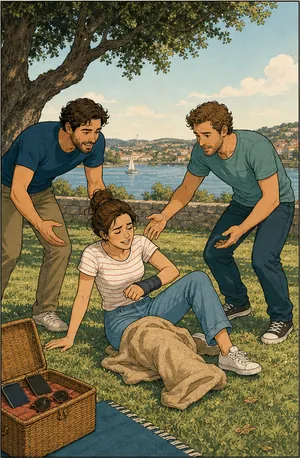
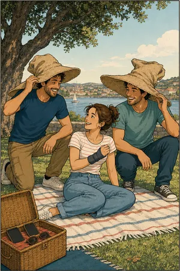

O que acontece
fora do horário.
Um convívio, um torneio, um passeio da equipa. Não é tempo de trabalho, e o seguro obrigatório não responde. É esse espaço que este cobre.
O que pode incluir
Não é o mesmo que
acidentes de trabalho.
Este seguro não substitui o de acidentes de trabalho. Quando a lei exige o obrigatório, ele tem de existir na mesma: respondem a situações diferentes e não se substituem.
O de acidentes de trabalho cobre o que acontece ao serviço, incluindo o trajeto. Este cobre o resto: convívios, eventos e atividades que a empresa organiza fora do tempo de trabalho.


Antes de assinar
O que deve
confirmar.
São os pontos que mudam de solução para solução, e que vemos consigo antes de haver proposta.
Quem está abrangido
Um grupo nominal ou uma função? A definição consta da apólice e determina quem fica coberto.
Âmbito temporal
24 horas ou só durante determinadas atividades. É o ponto que mais varia.
Capitais por cobertura
Morte, invalidez e despesas de tratamento têm capitais próprios, e o das despesas é o que mais se usa.
Atividades excluídas
Desportos de risco e algumas atividades específicas costumam exigir declaração ou extensão.
Relação com o obrigatório
Não substitui o seguro de acidentes de trabalho. Quando este é exigível por lei, tem de existir na mesma.
Para quem
Empresa que organiza convívios
Um almoço de equipa, um torneio, um passeio. Não é tempo de trabalho, e por isso não é acidente de trabalho — mas alguém se pode magoar.
Associação ou clube
Atividades com participantes que não são trabalhadores. O enquadramento é outro e exige uma solução própria.
Benefício para a equipa
Uma cobertura 24 horas oferecida aos colaboradores vale como benefício e custa, em regra, pouco por pessoa.
Informação resumida e de caráter geral. As condições que valem são as da informação pré-contratual e contratual do produto proposto.
Quem define coberturas, capitais e exclusões é a companhia. Veja a página oficial do produto e traga-nos as dúvidas.
Vai organizar alguma coisa?
Fale connosco antes.
Diga-nos que atividade é, quantas pessoas e por quanto tempo. Há soluções pontuais para eventos e soluções anuais para a equipa.
Sem compromisso. Não usamos os seus dados para mais nada.